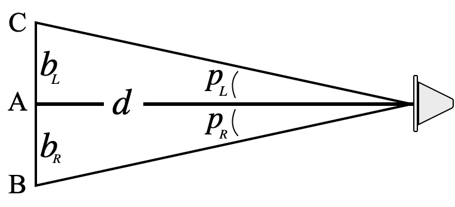

Before you actually compute the distance to your star from the parallax measurements, write down a guess for how far you think the star was \[d_{\rm guess} =\]

Finally, we have all the pieces in place to determine the distance to our star. Because we have measured two baseline distances and two parallax angles, we have two measurements of distance to the star: \[d_L = \frac{b_L}{\tan p_L} = \qquad \qquad \qquad \qquad d_R = \frac{b_R}{\tan p_R} =\] Are your two measurements the same? Are they close to the guess you made?